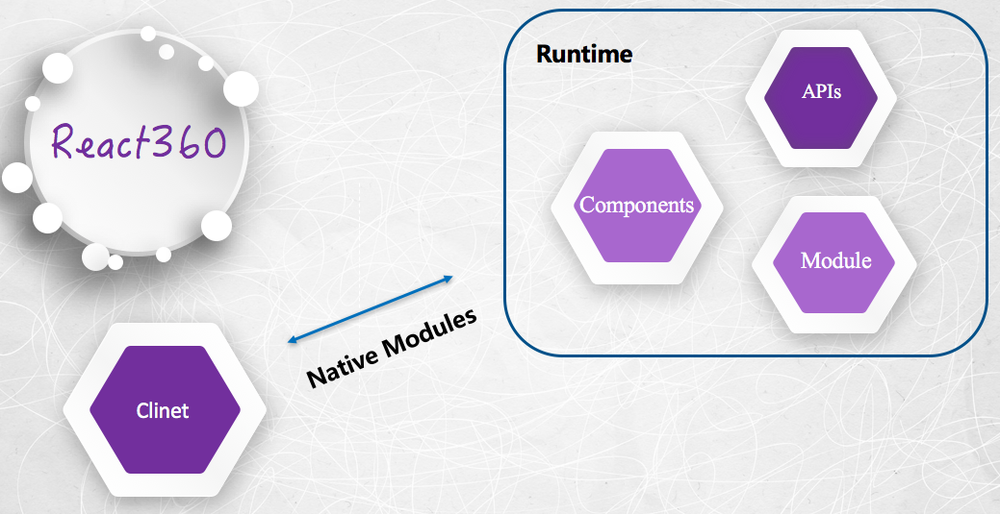
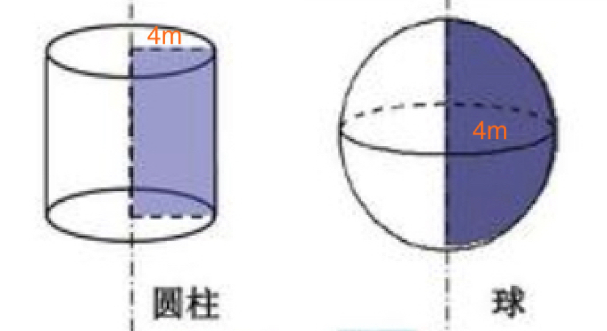

原文连接:https://www.cnblogs.com/venoral/p/10914222.html
前言
混迹VR届的发烧友兼开发者们一定不要错过这款FaceBook推出的跨端VR开发框架——React360，称为360全景体验框架更为准确，因为其前身是FaceBook和Oculus2017年发布的一个叫作“Racet VR”的JS库，用来在web端创建3D和VR体验。后来Oculus使用该框架的原生C++版本构建自己部分应用，随着时间推移，由于要求框架解决不同需求，项目的APIs开始发生分叉。为了避免两个系统的混淆，开源框架重命名为React360，这更好地反映它的使用场景：创建横跨PC，移动端，VR设备上的沉浸式360体验。
可以先看一下官方示例效果，这是一个稍复杂的应用，加入了3D模型，在3D模型和2D面板间共享数据。

体验
工作原理
官方提供了构建工具react-360-cli，内部使用和ReactNative一样的打包工具Metro，基于JS Bundle在自己的JS Runtime中进行解析，通过事件机制与客户端通信，其实该框架还有很多方面相像或依赖于RN。构建一个React360应用程序需要完成两部分，需要渲染的Raect组件和Runtime定义（这种角色划分直接借鉴于React Native）。这也很清楚地反映出React360的工作流程，可以参见下图：
（工作流程图）
基于JavaScript Core/V8引擎，React360提供了Runtime需要的APIs，在客户端（头戴设备，移动端，浏览器等）完成构建界面，web端的渲染底层依赖于Three.js，这是业界较为成熟的3D图形框架，一般需要手动设置3D网格和纹理，而框架中的react-360-web模块隐藏了这些细节。当创建了新的React组件，框架会指示Runtime将它们添加到3D场景中，当用户提供输入将作为事件通过Runtime传递给React，这两部分相互合作形成一个凝合系统。如果想在系统中分享数据，就需要借助框架提供的Native Modules。
需要注意的是，由于JS运作在浏览器中是单线程的，应用中任何阻碍行为都有可能造成渲染延迟，这对于VR这种即时性很强的体验是十分致命的，所以框架将React组件和渲染过程放在分离的上下文中情有可原。
默认情况下，React360使用Web Worker执行你的React代码，而不是标准浏览器，这就意味着在组件定义的文件中访问不到原生window.location这类APIs。并不是严格意义上的无法访问，事实上当你打印window对象时React360提供了一个DedicatedWorkerGlobalScope类型实例，它包装了window的一些内容。
Surfaces
Surfaces实际上是一个载体，允许你添加2D内容到3D场景，开发者依据像素定义Surfaces宽高，React360获取信息产生合适尺寸的对象，官方介绍了两种类型的Surfaces，Cylinder和Flat。一个Cylinder Surface让2D内容投射到半径为4m的Cylinder内部，其实是假想的圆柱模式。一个Flat Surface位于4m半径的球体外侧，一个假想的球体模式。APIs也提供了像yaw（垂摇），pitch（纵摇），roll（横摇）这些物体自由度控制信息。

为了将React组建附着在Surface上，需要使用AppRegistry注册组件，又一次与ReactNative相似。这会告知Runtime你的组件通过id字段被唯一确定。
AppRegistry.registerComponent('MyAppName', () => MyAppName);同时在Runtime文件中引用。
r360.renderToSurface(
r360.createRoot('MyAppName'),
r360.getDefaultSurface(),
'default' /* 可选项，引用的surface的名称 */
);Components
官方提供了呈现2D，3D内容的展示组件和交互按钮组件。
- View：UI构建最基本的元素，被用来组织实体或其他View元素，也是输入事件的容器。
- Image：呈现2D图像
- ENtity：渲染3D对象，支持obj，mtl，gltf格式文件
- VrButton：是一个实用程序类，是捕获事件的包装器。可以检测各种输入设备上单击类型操作，这是通过一个可以监听按键事件的内部状态机做到的。
Layout
支持2D Surface布局，完全以Flexbox格式布局，又是一个和RN相似的点。支持3D Space布局，使用Entity组件时候，通过transform完成3D对象放置，x轴指向用户右侧，y轴指向上方，z轴指向用户后方。
APIs
官方提供了常见的APIs，例如来自React Native的Animated；键值对存储系统AsyncStorage；值得一提的是提供的ControllerInfo可以被用来响应控制器的connect/disconnect事件，获取关于所连接的游戏手柄和控制器的静态信息，比如唯一标识符，按钮，轴数等信息。环境API Environment用来改变场景的背景，包括图片，音频，视频。
实例解读
利用react-360-cli生成的项目中主要有这三个文件：
- index.js：放置应用的主要代码，React组件的地方，在这里可以组织拆分多个组件
- client.js：也就是Runtime的配置，这部分连接浏览器环境和React应用。根据代码示例看到主要完成三件事：（1）创建React360一个新实例，加载并附加React代码到DOM特定位置，这里也是传递初始化选项的地方。（2）将你的代码挂载到3D场景中，在index.js中声明的挂载点附着在应用程序的默认曲面。（3）添加背景信息，这个部分可选，允许代码仍在加载过程中展示图片，让用户尽快看到一些内容。
- index.html：提供安装JS代码的挂载点。
1 import {ReactInstance} from 'react-360-web';
2
3 function init(bundle, parent, options = {}) {
4 const r360 = new ReactInstance(bundle, parent, {
5 fullScreen: true,
6 ...options,
7 });
8
9 r360.renderToSurface(
10 r360.createRoot('SlideshowSample', {
11 photos: [
12 {uri: './static_assets/360_world.jpg', title: '360 World1', format: '2D'},
13 {uri: './static_assets/360_world2.jpg', title: '360 World2', format: '2D'},
14 // Add your own 180 / 360 photos to this array,
15 // with an associated title and format
16 ],
17 }),
18 r360.getDefaultSurface(),
19 );
20 }
21
22 window.React360 = {init};Native Modules
前面说过React组件运行在单独上下文中，那么如何与主窗口通信，官方提供了Native Modules模块，让React代码有了回调到Runtime的能力，包括在加载中存值，请求有关连接控制器信息或操纵渲染环境。Native模块被创建在Runtime代码中，使用Native Module需要自定义类，继承自Module，使用前需注册，这个示例模板代码演示了Native Modules的许多用法
1 import {Module} from 'react-360-web';
2
3 class MyModule extends Module {
4 constructor() {
5 // 使这个模块在NativeModules.MyModule可用
6 super('MyModule');
7 }
8
9 // 这个方法将被暴露到React应用一侧
10 doSomething() {
11
12 }
13 }
14
15 const r360 = new ReactInstance(
16 'MyApp.bundle?platform=vr',
17 document.getElementById('container'),
18 {
19 // 在初始时刻注册自定义模块，接收Native Module实例，或一个返回实例的函数（需要传递上下文）
20 nativeModules: [
21 new MyModule(),
22 ctx => new MyModule(ctx)
23 ]
24 }
25 );通常有两种使用场景，暴露常量和普通到React（同步），回调函数或返回Promise方法（异步）。这一段代码同时演示了这几种使用场景，这是一个发送浏览器信息到React侧的应用示例，在注册阶段，模块构造时常量生成并添加模块实例的userAgent属性上，这个值被直接传递给React。第二个例子是暴露了同步setTitle()方法，只需要一个字符串设置窗口标题栏。剩下两个异步方法展示了异步数据如何返回到React。当getBatteryLevel()在React侧被调用，开发者传递的回调在数据可用时触发，调用上下文提供的invokeCallback，将参数放置在数组中，你可以给回调传递任意数量的参数。尽管回调是处理异步任务的一种方式，但我们更偏向于用Promise创建有组织可读性强的异步逻辑链。通过Native Module，你可以使用$符号前缀形式来暴露这种行为，两个回调ID会作为Promise的resolve, reject自动传递给Runtime，该方法会返回一个Promise到调用端。
1 import {Module} from 'react-360-web';
2
3 export default class BrowserInfoModule extends Module {
4 constructor(ctx) {
5 super('BrowserInfo');
6 this._rnctx = ctx;
7 this.userAgent = navigator.userAgent;
8 }
9 /*
*/
10 setTitle(title) {
11 document.title = title;
12 }
13
14 getBatteryLevel(cb) { // 读取window信息
15 const getBattery = navigator.mozGetBattery || navigator.getBattery;
16 getBattery
17 .call(navigator)
18 .then(
19 battery => {
20 // extract the level and return it
21 return battery.level;
22 },
23 e => {
24 // if an error occurs, return null
25 return null;
26 }
27 )
28 .then(level => {
29 if (this._rnctx) {
30 this._rnctx.invokeCallback(cb, [level]);
31 }
32 });
33 }
34
35 $getConfirmation(message, resolve, reject) {
36 const result = window.confirm(message);
37 if (this._rnctx) {
38 if (result) {
39 this._rnctx.invokeCallback(resolve, []);
40 } else {
41 // When rejecting a Promise, a message should be provided to populate
42 // the Error object on the React side
43 this._rnctx.invokeCallback(reject, [{message: 'Canceled the dialog'}]);
44 }
45 }
46 }
47 }后记
对于React360的整体一览，官方文档还是对在web端介绍比较多，官方开发团队在GitHub也比较活跃，所以有问题可以及时issue都会有人回复。Facebook在几年前收购了Oculus足已看出其进军VR届的雄心已经初见倪端，目前市面上许多APP对360全景图的应用也万象回春，微博的全景图借助手机的陀螺仪和重力传感器在不点击图片详情的情况下跟随用户手势动态变化，自如的VR看房，在我们APP里也引入了全景酒店实景体验。在昂贵的VR设备消费者负担不起的情况下，360度全境体验正是VR在当今阶段最普及的形态，虽然只是纯粹的平面图像，却也一定程度上营造了沉浸式感受，而React360在静态全景的基础上引入了多种交互，这更加方便消费者了解需求，相信360全景的未来还能做得更多。